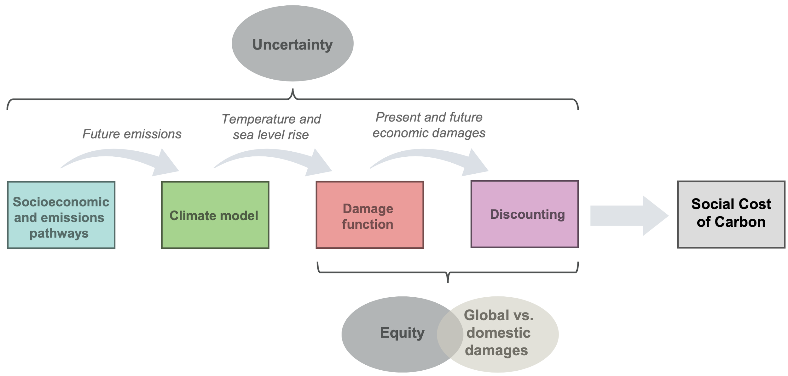

36 SCC - Social Costs of Carbon
The most important number you have never heard of
Greenstone Testimony
Greenstone Estimating SCC
Greenstone Updating SCC
Current prices far below SCCSCC: The straw that stirs the drink
The dollar value that future populations and governments around the world would be willing to pay to avoid experiencing climate change.
If you could see dimly into the future—which you can!—and calculate in dollars the benefits of actions preventing utter destruction and chaos, what would you call this price? You might call it “the alpha price,” the price of having a safe future.
The s̶o̶c̶i̶a̶l̶ ̶c̶o̶s̶t̶ ̶o̶f̶ ̶c̶a̶r̶b̶o̶n̶ alpha price is a regulatory tool (yawn) that addresses an important disparity, which is the difference between market prices for fossil fuels and the value of the damage they inflict on the world. By calculating the alpha price… and using it as a “benefit” in cost-benefit analyses, government can make sure that they truly understand the costs and benefits of new policies. They ensure that demonstrably incorrect market prices for fossil fuels are not obscuring the real benefits of action. t’s a complicated thing, calculating the alpha price, which brings us to the question of how bureaucratic inertia and professional conventions perpetuate thinking we don’t need anymore. Hold your breath, we’re free-diving now deep into the bowels of regulatory bureaucracy. Which brings us to the punchline: Is there a better way to bring about a net-zero, safe future without even relying on an alpha price? Is applying a cost-benefit analysis to climate change itself a part of the bureaucratic and professional conventions that are holding back climate progress? Maybe! That’s why(I think!) (???) et al have given us Near-Term to Net-Zero and (I think) why (???) et al have given us declining CO2 price paths. (Eric Roston, twitter thread).
36.1 The most important number you have never heard of
36.1.1 Greenstone Testimony
- The social cost of carbon (SCC) is the cost to society of polluting an additional ton of CO2. The SCC enables regulators to account for potential benefits to society through lower carbon emissions and also points towards the optimal price on carbon required to address excess greenhouse gas emissions. The US government SCC was approximately $50 per ton of CO2 as of 2016, using a discount rate of 3%.
Since its inception, the SCC has been used in roughly 150 federal regulations that cover energy efficiency, forest conservation, fuel-economy standards, and emissions performance standards. Indeed, in many cases the SCC was instrumental in passing these regulations, offering relevant agencies a reliable, transparent tool to calculate the full benefits the new rules would offer to society. All told, a recent paper calculated, federal regulations written to include the SCC in the US have more than $1 trillion of benefits.
When one considers the possibility of larger-than- expected temperature changes for a given change in emissions, sea level rise in short time periods, physical “tipping points”, and human responses like mass migration, then the case for a low discount rate appears strong.
The broader point is that global interest rates have declined since the SCC was set and, even setting aside the risk characteristics of payoffs from climate mitigation investments, there is a solid case that the discount rates currently used to calculate the SCC may be too high.
When the US accounts for the full global benefits of reducing our emissions, this incentivizes reciprocal climate policies in other countries, like China and India, that reduces their emissions which benefits the US.
The use of a SCC that only considers domestic benefits is very likely to deprive the United States of emissions reductions in the United States that would protect us from more virulent climate change
Climate Impact Lab (CIL) aims to produce the world’s first empirically derived estimate of the social cost of carbon
CIL’s core findings to date have been in the mortality sector. Climate change has a demonstrable impact on mortality rates, as extreme temperatures, both hot and cold, affect health outcomes such as heat stroke and cardiovascular disease. Using data from forty countries and statistical methods to account for the benefits and costs of adaptation, we estimate the full mortality risk due to climate change to be an additional 85 deaths per 100,000 in 2100. This increase in the global mortality rate is more than the mortality rate associated with all infectious diseases in 2018.
The elevated mortality risk equates to a monetary cost of $23.6 per metric ton of carbon emitted today when using the same assumptions that underlie the Obama SCC calculation. In other words, we estimate the partial social cost of carbon, accounting for costs to human mortality alone, to be at least $23.6 per ton.
The Obama administration’s estimate of the SCC assumed that society is risk neutral, that is, we are not willing to pay a premium to avoid uncertainty. If the more realistic assumption that society is risk averse were introduced, then the estimated SCC would be higher, likely substantially so, than the $50 per metric ton of CO 2 discussed in the previous section. Similarly, there is a good case for scaling the damages from the CIL’s research upwards to reflect the risk aversion that characterizes individuals’ choices in their own lives.
While Accra, Ghana will see an increase in the full mortality risk of 160 per 100,000 due to climate change in 2100, Oslo, Norway will experience a decline in the full mortality risk of 230 per 100,000 due to warmer winters. Climate change will leave some regions as winners and others as losers both around the globe and within the United States.
Climate impacts vary considerably across locations. While northern latitudes will experience net savings due to reduced heating needs, increased cooling demand will lead to large increases in many areas of the tropics.
Within the United States, I find that rural areas will be hard-hit. My co-author and I estimate that with a high emissions scenario 18 , rising temperatures will reduce 2050 corn acreage by 94% and soybean acreage by 98% when compared to levels in 2002. The lost corn and soybean production will not be replaced by increased production of any crop currently grown in the US: as returns to agriculture decline in connection with climate change, farmers will seek to shift land use toward different crops and non-agricultural options. It will effectively bring an end to the more than 150-year tradition of farming as we know it in the US corn-belt that encompasses great swatches of Iowa, Nebraska, and Illinois.
The uneven distribution of climate damages means that the very mitigation of climate change is a pursuit of environmental justice.
36.1.2 Greenstone Estimating SCC (MIT CEEPR WP 2011-006):*
For 2010, the central value of the SCC is $21 per ton of CO 2 emissions and sensitivity analyses are to be conducted at $5, $35, and $65 (2007$). This paper summarizes the methodology and process used to develop the SCC values.
The 2009-2010 interagency process that developed these SCC values was the first U.S. federal government effort to promote consistency in the way that agencies calculate the social benefits of reducing CO 2 emissions in regulatory impact analyses. 4 Prior to 2008, reductions in CO 2 emissions were not valued in federal benefit–cost analyses.
IAMs
Analysts face a number of significant challenges when attempting to quantify the economic impacts of CO 2 emissions. In particular, analysts must make assumptions about four main steps of the estimation process: (1) the future emissions of greenhouse gases; (2) the effects of past and future emissions on the climate system; (3) the impact of changes in climate on the physical and biological environment; and, (4) the translation of these environmental impacts into economic damages. Integrated assessment models (IAMs) have been developed to combine these steps into a single modeling framework; the word “integrated” refers to the fact that they integrate knowledge from science and economics. However, they gain this advantage at the expense of a more detailed representation of the underlying climatic and economic systems.
The IAMs translate emissions into changes in atmospheric greenhouse gas concentrations, atmospheric concentrations into changes in temperature, and changes in temperature into economic damages.
The emissions projections used in the models are based on specified socio- economic (GDP and population) pathways. These emissions are translated into concentrations using the carbon cycle built into each model, and concentrations are translated into warming based on each model’s simplified representation of the climate and a key parameter, climate sensitivity. Finally, transforming the stream of economic damages over time into a single value requires judgments about how to discount them.
(DICE-PAGE-FUND differences discussed in paper omitted here)
Overall, the power of the IAMs is that they offer guidance to the incredibly complex question of what an extra ton of greenhouse damages will do to human wellbeing. This is no small task and this is what makes them so appealing. However, the results are highly dependent on a series of assumptions that cannot easily be verified.
On Discount Rates:
Historically Observed Interest Rates
Ramsey Equation
Ramsey discounting also provides a useful framework to inform the choice of a discount rate. Under this approach, the analyst applies either positive or normative judgments in selecting values for the key parameters of the Ramsey equation: η (coefficient of relative risk aversion or elasticity of the marginal utility of consumption) and ρ (pure rate of time preference). 18 These are then combined with g (growth rate of per-capita consumption) to equal the interest rate at which future monetized damages are discounted: ρ + η·g.
Most papers in the climate change literature adopt values for η in the range of 0.5 to 3, although not all authors articulate whether their choice is based on prescriptive or descriptive reasoning. 19 Dasgupta (2008) argues that η should be greater than 1 and may be as high as 3, since η equal to 1 suggests savings rates that do not conform to observed behavior. With respect to the pure rate of time preference, most papers in the climate change literature adopt values for ρ in the range of 0 to 3 percent per year. The very low rates tend to follow from moral judgments involving intergenerational neutrality. Some have argued that to use any value other than ρ = 0 would unjustly discriminate against future generations (e.g., Arrow et al. 1996, Stern et al. 2006). However, even in an inter-generational setting, it may make sense to use a small positive pure rate of time preference because of the small probability of unforeseen cataclysmic events (Stern et al. 2006).
Some economists and non-economists have argued for constant discount rates below 2 percent based on the prescriptive approach. When grounded in the Ramsey framework, proponents of this approach have argued that a ρ of zero avoids giving preferential treatment to one generation over another. The choice of η has also been posed as an ethical choice linked to the value of an additional dollar in poorer countries compared to wealthier ones. Stern et al. (2006) applies this perspective through his choice of ρ = 0.1 percent per year η = 1, yielding an annual discount rate of 1.4 percent when combined with the growth rate. Recently, Stern (2008) revisited the values used in Stern et al. (2006), stating that there is a case to be made for raising η due to the amount of weight lower values place on damages far in the future (over 90 percent of expected damages occur after 2200 with η = 1).
If there is a persistent element to the uncertainty in the discount rate (e.g., the rate follows a random walk), then it will result in an effective (or certainty-equivalent) discount rate that declines over time. Consequently, lower discount rates tend to dominate over the very long term
Updating 2021 - $125 - Abstract
This paper outlines a two-step process to return the United States government’s Social Cost of Carbon (SCC) to the frontier of economics and climate science. The first step is to implement the original 2009-2010 Inter-agency Working Group (IWG) framework using a discount rate of 2%. This can be done immediately and will result in an SCC for 2020 of $125. The second step is to reconvene a new IWG tasked with comprehensively updating the SCC over the course of several months that would involve the integration of multiple recent advances in economics and science. We detail these advances here and provide recommendations on their integration into a new SCC estimation framework.
36.1.3 Greenstone: Updating SCC
In many respects, the SCC is the “straw that stirs the drink” for most domestic climate policies, determining in some cases whether or not regulatory action can proceed.
A defining feature of the best new (after 2010) research is that it relies on large-scale data sets, rather than assumptions that are often unverifiable.
New estimates for two of three recently studied SCC sectors (mortality and agriculture) indicate substantially larger damages from CO 2 , suggesting that the SCC, as settled in 2013, is too low. Climate change is projected to disproportionately harm today’s poorest populations, exacerbating concerns about environmental justice.
The Biden administration can initiate the first step immediately and simply involves implementing the IWG’s approach again with a discount rate of no higher than 2 percent, which reflects profound changes in international capital markets that make the current values difficult to justify. At a discount rate of 2% the SCC in 2020 is $125.
There are seven “ingredients” necessary to construct the SCC. The first four are often referred to as “modules” :
1. A socioeconomic and emissions trajectory, which predicts how the global
economy and CO 2 emissions will grow in the future;
2. A climate module, which measures the effect of emissions on the climate;
3. A damages module, which translates changes in climate to economic
damages; and
4. A discounting module, which calculates the present value of future
damages. In addition, there are three cross-cutting modeling decisions that affect the entire process:
1. Whether to include global or instead only domestic climate damages;
2. How to value uncertainty; and
3. How to treat equity. 
DICE, FUND, and PAGE substantially underestimate the speed of temperature increase, relative to climate models that satisfy the NAS criteria for meeting scientific standards (Figure 4). 17 For example, higher atmospheric CO 2 concentrations cause the oceans to warm and acidify, which makes them less effective at removing CO 2 from the atmosphere. The consequence is a positive feedback loop that accelerates warming. 18 However, this dynamic is missing from both the DICE and PAGE climate modules. The delayed projection of warming in the IAMs’ climate models means that resulting estimates of the SCC are likely to be too low. The delay pushes warming further into the future, which is discounted more heavily.
A simple Earth system model that can conduct uncertainty analysis while also matching predictions from these more complex models is necessary. (FAIR)
A key limitation of FAIR and other simple climate models is that they do not represent the change in global mean sea level rise (GMSL) due to a marginal change in emissions. However, statistical methods can be used in combination with long historical records of both temperature and sea level to build a semi-empirical model of the relationship between GMSL and GMST. 25 Such models are readily available 26 and can enable the inclusion of marginal damages due both to warming and to projected changes in sea level. An important potential caveat is that available semi-empirical models of GMSL, in addition to more complex bottom-up models, may underestimate future sea level rise due to their inability to capture plausible future dynamics that are not observed in the historical record (e.g., ice cliff collapse).
At least two problems have plagued the IAM damage functions. First, they are primarily derived from ad-hoc assumptions and simplified relationships, not large-scale empirical evidence. Further, the IAM damage functions have tended to treat the world as nearly homogeneous, dividing the globe into at most sixteen regions. This aggregation misses a great deal, especially because there are important nonlinearities in the relationship between temperature and human well-being that are obscured by substantial aggregation.
The damage functions from FUND, DICE, and PAGE used by the IWG do not meet this criterion. They are only loosely calibrated to empirical evidence and/or rely on outdated estimates that fail to isolate the role of changes in the climate from economic variables such as income and institutions. For example, the majority of the studies used in FUND’s sector-specific damage functions were published prior to 2000, and all likely suffer from the influence of unobserved factors that are correlated with temperature. Similarly, early versions of DICE utilized a damage function that was only loosely tied to empirical literature (Diaz and Moore, 2017; Nordhaus, 2010), while the recent DICE update continues to rely on empirical papers that fail to identify plausibly causal effects (Nordhaus and Moffat, 2017).
Dramatic reductions in computing costs and increased data availability have enabled researchers to identify the effects of climate change on social and economic conditions at local scale across the globe. This body of work has uncovered that many socioeconomic outcomes display a strongly nonlinear relationship with climate variables.
The existing IAMs’ damage functions fail to adequately characterize nonlinearities, to disaggregate local impacts around the world, or to include information from lower-income, hotter regions of the globe.
Overturned past findings that suggested that climate change would benefit agriculture, instead finding that it would cause substantial damage.
Along with a set of socioeconomic and emissions scenarios, discussed below, the climate and damages modules together translate a single additional ton of CO2 emissions into a trajectory of additional warming, and a stream of future damages. The final step in the SCC calculation is to express this stream of damages as a single present value, so that future costs and benefits can be directly compared to costs and benefits of actions taken today.
!! There are two reasons for “discounting the future,” or more precisely for discounting future monetary amounts, whether benefits or costs. The first is that an additional dollar is worth more to a poor person than a wealthy one, which is referred to in technical terms as the declining marginal value of consumption. The relevance for the SCC is that damages from climate change that occur in the future will matter less to society than those that occur today, because societies will be wealthier. The second, which is debated more vigorously, is the pure rate of time preference: people value the future less than the present, regardless of income levels. While individuals may undervalue the future because of the possibility that they will no longer be alive, it is unclear how to apply such logic to society as a whole facing centuries of climate change. Perhaps the most compelling explanation for a nonzero pure rate of time preference is the possibility of a disaster (e.g., asteroids or nuclear war) that wipes out the population at some point in the future, thus removing the value of any events that happen afterwards.
!! U.S. government agencies have relied on the Office of Management and Budget’s (OMB’s) guidance to federal agencies on the development of regulatory analysis in Circular A-4, and used 3 percent and 7 percent discount rates in cost-benefit analysis. 61 These two values are justified based on observed market rates of return, which can be used to infer the discount rate for the SCC since any expenditures incurred today to mitigate CO 2 emissions must be financed just like any other investment. The 3 percent discount rate is a proxy for the real, after-tax riskless interest rate associated with U.S. government bonds and the 7 percent rate is intended to reflect real equity returns like those in the stock market. However, climate change involves intergenerational tradeoffs, raising difficult scientific, philosophical and legal questions regarding equity across long periods of time. There is no scientific consensus about the correct approach to discounting for the SCC.
The assumption that climate damages were projected to be uncorrelated with overall market returns (eliminating the 7 percent rate, derived from equity markets) and thus used insights from asset pricing theory that the riskless interest rate was appropriate.
The equilibrium real interest rate has declined substantially since the 1990s, suggesting a lower discount rate is justified. 65 Additionally, evidence from long-term real estate investments suggests that for climate mitigation, which has payoffs over very long periods of time, discount rates should be even lower than those used to discount costs and benefits of shorter-lived investments. 66 Overall, our judgement is that it is difficult to defend a 3 percent discount rate for climate investments and there is now a compelling case for a riskless discount rate of no higher than 2 percent.
!! There is also the possibility, however, that the riskless rate itself is not appropriate as the central discount rate due to the unique risk properties of climate change and uncertainty about future interest rates. Because discount rates reflect the returns to investments that mitigate climate change, Americans are best served by using an interest rate associated with investments that match the structure of payoffs from climate mitigation. Capital asset pricing models recommend low discount rates in scenarios where investments (in this case CO 2 mitigation) pay off in “bad” states of the world—that is, if climate damages are likely to coincide with a slowing overall economic growth rate that for example could be due “tipping points” or large-scale human responses to climate change, including mass migration. 68 If on the other hand climate damages act as tax on the economy (i.e., total damages are larger when the economy grows faster), then higher discount rates like the average return in equity markets would be merited.
Ramsey A second potential approach to deriving a discount rate is to explicitly account for future economic growth using the so-called Ramsey equation, 69 which is often referred to as the prescriptive approach. This approach has been recommended by the NAS as a “feasible and conceptually sound framework”. Rather than rely on observed interest rates, it derives a discount rate from assumptions about three parameters: the pure rate of time preference, the growth rate of consumption, and a parameter capturing the decreasing marginal utility of consumption. Values for the first and third parameters have been estimated in a large literature, while the consumption growth rate will depend on the set of socioeconomic scenarios developed in the socioeconomic and emissions module described above. 70 The Ramsey approach has two key limitations. First, future economic growth is uncertain, while the Ramsey equation is deterministic. Second, climate damages are likely to be the highest in possible future scenarios where economic growth is the lowest. Both facts imply that climate mitigation policies act as a form of insurance for the future and imply a lower discount rate than is given by the Ramsey equation. Besides these limitations, some find it unappealing that the Ramsey approach requires several judgments by “experts” about the value of key parameters, rather than relying on observed market interest rates.
Socioeconomic and Emissions Module To calculate the SCC, it is necessary to compare a baseline trajectory of economic growth and CO 2 emissions to a trajectory in which one more ton of CO 2 is released. All else equal, a higher baseline CO 2 emissions trajectory will result in a greater SCC, because projected climate change damages are nonlinear; that is, an additional ton of CO 2 emissions is projected to cause more damages at higher atmospheric concentrations of CO 2 . Baseline economic growth affects the SCC in a variety of competing ways. Richer economies consume more energy and generate higher emissions, such that marginal tons do more damage and populations have higher willingness-to-pay to avoid climate change, which increases the SCC.
Uncertainty In the last decade, advances in computing have enabled probabilistic climate change projections that capture multiple measures of uncertainty about the magnitude of climate damages. Thus, for the first time, it is possible to characterize these uncertainties and to incorporate them into the calculation of the SCC. Accounting for this uncertainty when individuals are modeled as risk averse can substantially increase the SCC.
Equity An additional dollar is worth more to a poor person than a wealthy one. Applying this principle to the SCC would require “equity weighting”. This logic would mean that damages occurring in poor countries are weighted more highly than damages in wealthy countries. The same logic that justifies discounting and the valuation of uncertainty over future states of the world implies that equity weights should be applied in any SCC calculation; declining marginal value of consumption is the fundamental economic concept behind all three concerns. Therefore, the most intellectually coherent approach to treating equity would be to calibrate equity weights from the large literature studying the marginal value of consumption, and to apply these weights at the spatial resolution of damages.
This pathway (C) is based on the recognition that a simple economic principle—declining marginal value of consumption—underlies the motivation for discounting as well as the valuation of both equity and uncertainty. 100 This principle is based on the straightforward observation that $100 is worth more to a person living in poverty than a wealthy person. In the climate setting, declining marginal value implies that one should attach a higher value to future and present impacts of climate change when they occur to populations experiencing lower incomes. It also means that when future incomes are uncertain, one has to account for the risk of severe damages occurring when average global income is very low, and thus when the value of an additional dollar is relatively high.
Therefore, an argument can be made for computing an SCC in which the damage function represents the difference in the “certainty-equivalent” value of consumption across all years, populations, and possible future states of the world with and without climate change. 102 In this approach, the valuation of climate damages is conducted from the perspective of a person who does not know their circumstances in advance, so they account for all potential income levels and degrees of climate risk they might face.
Under this approach, discounting, uncertainty valuation, and accounting for equity implications are all incorporated into the construction of a single, certainty-equivalent damage function.
36.2 Current Prices far below SCC
The vast majority of carbon prices are well below even the most conservative estimates of the “social cost of carbon” (SCC). The SCC internalizes the environmental and health effects of greenhouse gas emissions. A recent study surveyed environmental experts on their estimation of SCC, which ranged between $80 and $300 per ton (Pindyck, 2019). Another study estimates a global median price of $417, with substantial national level variation (Ricke et al., 2018) A more conservative estimate puts the SCC between $50-$100 by 2030 (Carbon Pricing Leadership Commission, 2017). Even compared to the most conservative estimates of the SCC, carbon pricing falls short. The most recent World Bank survey of carbon pricing shows that half of the 61 carbon pricing policies around the globe have a price lower than $10. The IMF estimates that the average global price for carbon is $2/ton (Parry, 2019).
36.3 Stern Stiglitz Alternative Approach
A Catalogue of all that is wrong with IAMs
Abstract
Designing policy for climate change requires analyses which integrate the interrelationship between the economy and environment, including: the immense risks and impacts on distribution across and within generations; the many failures, limitations or absences of key markets; and the limitations on government, both in offsetting these failures and distributional impacts. Much of the standard economic modelling, including Integrated Assessment Models, does not embody key aspects of these essentials. We identify fundamental flaws in both the descriptive and normative methodologies commonly used to assess climate policy, showing systematic biases, with costs of climate action overestimated and benefits underestimated. We provide an alternative methodology by which the social cost of carbon may be calculated, one which embraces the essential elements we have identified.
Memo
Ambition
The idea of integrating economics and the environment makes eminent sense, but the devil is in the details. The fact that the overwhelming consensus in the international community, including the scientific community, differs so markedly from the results of the IAMs raises a key question: is it sloppy thinking, perhaps an excess of compassion for the species that may be extinguished as climate change proceeds apace to the 3.5 to 4 degree “recommended” by the IAMs, that has led the international community to irrationally embrace a goal involving excessive costs from the perspective of a hard-headed analysis of society welfare maximization; or is it that the IAMs have left something—or many things— out of their analysis? Or is their whole conceptual apparatus so deeply flawed as to give us little guidance either for the calculation of SCC or the level of climate change that should be acceptable? The objective of this paper is to answer that question, and in doing so, to formulate another approach, which better reflects the risks, the distributive effects, and the market failures that are integral to the analysis of climate change.
Varia
Capital markets do not represent moral valuations across individuals.
The key assumption within IAMs, showing how they all, on damages, on technology, on values and preferences, in the treatment of risk, distribution, and other market failures, tilt conclusions away from strong action on climate change and towards a low social cost of carbon.
Conclusion
The paper provides a path towards the reconciliation between the perspectives of the broader scientific community, which has pushed for urgent and strong action (IPCC, 2018; Ripple et al., 2020) and a part of the economics community, using particular versions of Integrated Assessment Models, who have been skeptical of the need for such urgent action and have not only been tolerant of, but urged the acceptance, of higher levels of climate change. The intuitions of the scientific community may well be right: the simplistic models of the economists have simply not captured essential aspects of the societal decision problem, and when they do so, the disparities in perspectives may be closed, if not eliminated.
36.3.1 Stern Stiglitz Carbon Pricing Commission
The Commission’s objective is to identify indicative corridors of carbon prices that can be used to guide the design of carbon-pricing instruments and other climate policies, regulations, and measures to incentivize bold climate action and stimulate learning and innovation to deliver on the ambition of the Paris Agreement and support the achievement of the Sustainable Development Goals.
The purpose of this Commission is to explore explicit carbon-pricing options and levels that would induce the change in behaviors— particularly in those driving the investments in infrastructure, technology, and equipment—needed to deliver on the temperature objective of the Paris Agreement,** in a way that fosters economic growth** and development, as expressed in the Sustainable Development Goals (SDGs)
‘Climate Policy Packages’
Relatively high prices today may be more effective in driving the needed changes and may not require large future increases, but they may also impose higher, short-term adjustment costs.
36.4 MCC - Mortality Cost of Carbon
Bressler Abstract
Many studies project that climate change can cause a significant number of excess deaths. Yet, in integrated assessment models (IAMs) that determine the social cost of carbon (SCC) and prescribe optimal climate policy, human mortality impacts are limited and not updated to the latest scientific understanding. This study extends the DICE-2016 IAM to explicitly include temperature-related mortality impacts by estimating a climate-mortality damage function. We introduce a metric, the mortality cost of carbon (MCC), that estimates the number of deaths caused by the emissions of one additional metric ton of CO2. In the baseline emissions scenario, the 2020 MCC is 2.26 × 10 ‒4 [low to high estimate −1.71× 10 ‒4 to 6.78 × 10 ‒4 ] excess deaths per metric ton of 2020 emissions. This implies that adding 4,434 metric tons of carbon dioxide in 2020—equivalent to the lifetime emissions of 3.5 average Americans—causes one excess death globally in expectation between 2020-2100. Incorporating mortality costs increases the 2020 SCC from $37 to $258 [−$69 to $545] per metric ton in the baseline emissions scenario. Optimal climate policy changes from gradual emissions reductions starting in 2050 to full decarbonization by 2050 when mortality is considered.
Bressler Memo
IAMs do not represent the latest scientific understanding of climate impacts. Although substantial advances in climate impact research have been made in recent years, IAMs are still omitting a significant portion of likely damages
A wide variety of climate damages—sea level rise, extreme weather, the direct effects of heat on productivity, agricultural impacts, and many more—must be monetized and summarized into a single number, and the relative contribution of these damages is often unclear
The magnitude of climate damages is sensitive to subjective choices around the monetization of non-market damages, and, since damages occur over long timescales, the discount rate at which future damage is converted into present value
In this study, we create an extension to DICE-2016 called DICE-EMR (Dynamic Integrated Climate-Economy Model with an Endogenous Mortality Response). We construct an additional reduced-form mortality damage function that projects the effect of climate change on the mortality rate using estimates from studies chosen from an interdisciplinary systematic research synthesis.
We use DICE-EMR to produce a new metric that avoids some of the limitations of the SCC: the mortality cost of carbon (MCC). The 2020 MCC is the number of expected temperature-related excess deaths globally from 2020 to 2100 caused by the emission of one additional metric ton of carbon-dioxide-equivalent emissions in 2020. We find that in the DICE baseline scenario that results in 4.1 °C warming above preindustrial temperatures by 2100, the 2020 MCC is 2.26 × 10−4 lives per metric ton in the central estimate, which implies that adding 4,434 metric tons of carbon dioxide in 2020—equivalent to the lifetime emissions of 3.5 average Americans—causes one excess death globally in expectation between 2020 and 2100. We also update the SCC and the optimal climate policy from DICE-2016 in DICE-EMR. After incorporating mortality costs in DICE-EMR, the 2020 SCC increases over sevenfold to $258 per metric ton in the central estimate in the baseline emissions scenario, and optimal climate policy changes from gradual emissions reductions starting in 2050 to full decarbonization by 2050.
Bressler (2021) The mortality cost of carbon (pdf)
Guardian
The lifestyles of around three average Americans will create enough planet-heating emissions to kill one person, and the emissions from a single coal-fired power plant is likely to result in more than 900 deaths, according to the first analysis to calculate the mortal cost of carbon emissions.
The new research builds upon what is known as the “social cost of carbon”, a monetary figure placed upon the damage caused by each ton of carbon dioxide emissions, by assigning an expected death toll from the emissions that cause the climate crisis.
The analysis draws upon several public health studies to conclude that for every 4,434 metric tons of CO2 pumped into the atmosphere beyond the 2020 rate of emissions, one person globally will die prematurely from the increased temperature. This additional CO2 is equivalent to the current lifetime emissions of 3.5 Americans.
Adding a further 4m metric tons above last year’s level, produced by the average US coal plant, will cost 904 lives worldwide by the end of the century, the research found. On a grander scale, eliminating planet-heating emissions by 2050 would save an expected 74 million lives around the world this century.
The figures for expected deaths from the release of emissions aren’t definitive and may well be “a vast underestimate” as they only account for heat-related mortality rather than deaths from flooding, storms, crop failures and other impacts that flow from the climate crisis, according to Daniel Bressler of Columbia University’s Earth Institute, who wrote the paper.